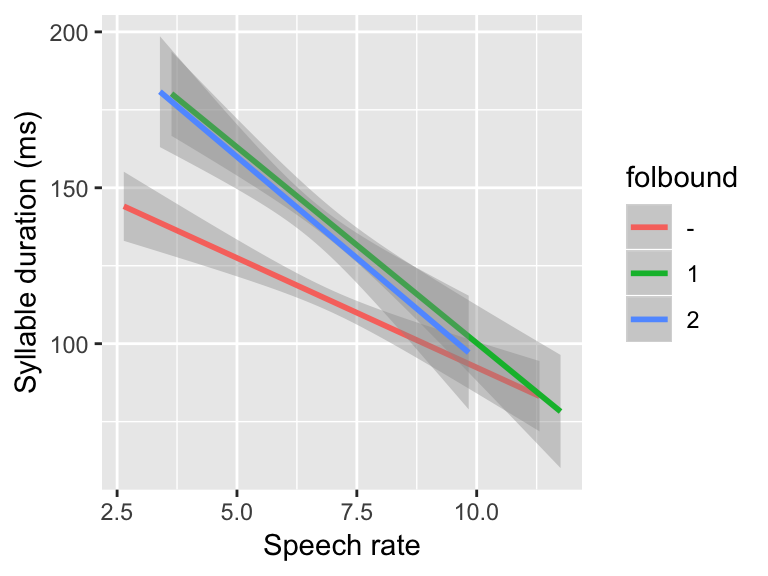
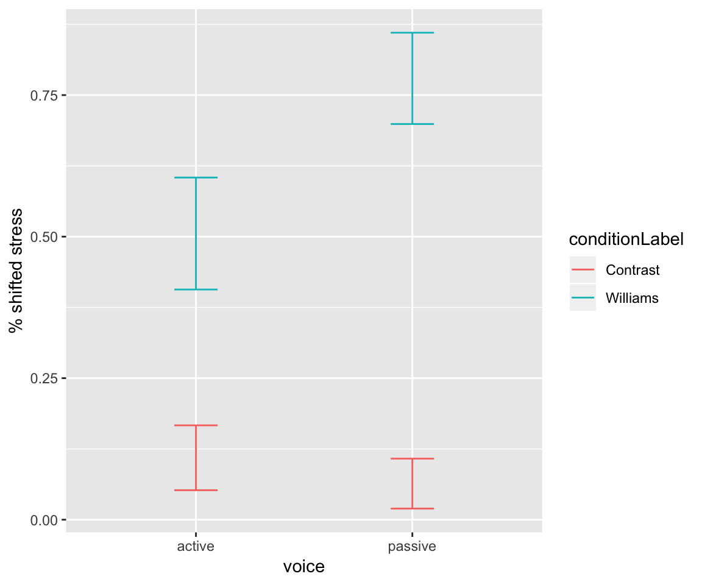
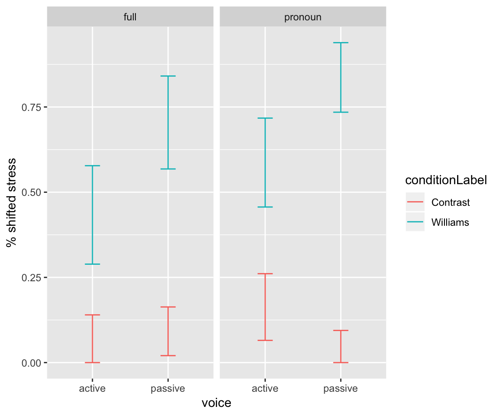

Chapter 6 Practical Regression Topics 1: Multi-level factors, contrast coding, interactions
Preliminary code
This code is needed to make other code below work:
library(gridExtra) # for grid.arrange() to print plots side-by-side
library(languageR)
library(ggplot2)
library(dplyr)
library(arm)
library(boot)
## loads givennessMcGillLing620.csv from OSF project for Wagner (2012) data
givenness <- read.csv(url("https://osf.io/q9e3a/download"))
givenness <- mutate(givenness,
conditionLabel.williams = rescale(conditionLabel),
clabel.williams = rescale(conditionLabel),
npType.pronoun = rescale(npType),
npType.pron = rescale(npType),
voice.passive = rescale(voice),
order.std = rescale(order),
stressshift.num = (as.numeric(stressshift) - 1)
)
## note: "stress shift" generally called "prominence shift" etc. in the text
## loads alternativesMcGillLing620.csv from OSF project for Wagner (2016) data
alternatives <- read.csv(url("https://osf.io/6qctp/download"))
## loads french_medial_vowel_devoicing.txt from OSF project for Torreira & Ernestus (2010) data
devoicing <- read.delim(url("https://osf.io/uncd8/download"))Note: Answers to some questions/exercises not listed in text are in Solutions
6.1 Multi-level factors: Introduction
Thus far, we have only used factors with two levels as predictors. In general, we want to be able to include factors with \(>2\) levels in regression models, such as part of speech (noun, verb, adjective, …), native language (L1 = English, French, Mandarin, other), and so on.
In this chapter we introduce techniques needed to effectively fit and interpret regression models which include multi-level factors:
Contrast coding, which captures how the different levels of the factor affect the response
Hypothesis testing to assess whether a multi-level factor helps predict the response, overall (without reference to particular levels)
Interpreting interaction terms involving multi-level factors, which are present in most models fitted in practice.
6.2 Contrast coding
A factor \(X\) with \(k\) levels corresponds to \(k-1\) categorical predictors, called contrasts. There are different ways of mapping \(k\) levels into \(k-1\) categorical predictors, corresponding to hypotheses that you want to test about how the factor affects the response. These different choices of contrasts (or “coding schemes”) result in different interpretations of:
The intercept
Regression coefficients for \(X\) in terms of levels of \(X\)
That is, the meaning of the intercept and the meaning of the regression coefficients corresponding to \(X\) depend on the coding scheme. This is fundamentally why factors with more than two levels are confusing—there is no single way to interpret them.
6.2.1 First examples
givenness data: two-level factor
Let’s begin with a linear regression example using the givenness data, with a single predictor: the two-level factor conditionLabel, which is of primary interest. This factor has two levels: Contrast and Williams. (Note that while discussing contrast coding, we will use italics to refer to levels of a factor, and teletype to refer to actual names of factors or other predictors.)
mod <- lm(acoustics ~ conditionLabel, data=givenness)
summary(mod)##
## Call:
## lm(formula = acoustics ~ conditionLabel, data = givenness)
##
## Residuals:
## Min 1Q Median 3Q Max
## -2.31843 -0.56264 0.01977 0.53651 2.50851
##
## Coefficients:
## Estimate Std. Error t value Pr(>|t|)
## (Intercept) -0.87510 0.05708 -15.331 < 2e-16 ***
## conditionLabelWilliams 0.31774 0.08224 3.863 0.000131 ***
## ---
## Signif. codes: 0 '***' 0.001 '**' 0.01 '*' 0.05 '.' 0.1 ' ' 1
##
## Residual standard error: 0.8032 on 380 degrees of freedom
## Multiple R-squared: 0.03779, Adjusted R-squared: 0.03526
## F-statistic: 14.93 on 1 and 380 DF, p-value: 0.0001315The conditionLabelWilliams row of the regression table gives the coefficient value for the single contrast corresponding to the two-level factor, which has two values: 0 and 1.
To see this, examine the contrast matrix:
contrasts(givenness$conditionLabel)## Williams
## Contrast 0
## Williams 1which says there is a single contrast, which R (confusingly) calls Williams—the name of the second level. This numeric variable takes on the value 1 when the level of condition is Williams and 0 when the level of condition is Contrast.
In the regression above:
The interpretation of the intercept is: value of
acousticswhenconditionLabel= ContrastThe interpretation of the regression coefficient
conditionLabelWilliamsis: difference inacousticsbetweenconditionLabel= Contrast andconditionLabel= Williams.
These are the interpretations of (1) and (2) resulting from this choice of contrast, which is called “dummy coding” (see Sec. 6.2.3.1 for more detail). R uses dummy coding by default for factors.
In previous analyses of the givenness data, we have often used a “standardized” version of conditionLabel, called clabel.williams:
mod <- lm(acoustics ~ clabel.williams, data=givenness)
summary(mod)##
## Call:
## lm(formula = acoustics ~ clabel.williams, data = givenness)
##
## Residuals:
## Min 1Q Median 3Q Max
## -2.31843 -0.56264 0.01977 0.53651 2.50851
##
## Coefficients:
## Estimate Std. Error t value Pr(>|t|)
## (Intercept) -0.72205 0.04109 -17.570 < 2e-16 ***
## clabel.williams 0.31774 0.08224 3.863 0.000131 ***
## ---
## Signif. codes: 0 '***' 0.001 '**' 0.01 '*' 0.05 '.' 0.1 ' ' 1
##
## Residual standard error: 0.8032 on 380 degrees of freedom
## Multiple R-squared: 0.03779, Adjusted R-squared: 0.03526
## F-statistic: 14.93 on 1 and 380 DF, p-value: 0.0001315a numeric variable which takes on values of roughly -0.5 and 0.5. This is equivalent to using a different contrast coding scheme, where the two values of the conditionLabel contrast are (roughly) -0.5 and 0.5.
(To see this, we can actually set the contrast values to -0.5 and 0.5 for the conditionLabel factor, and carry out a regression using conditionLabel as a factor:
## sets contrast levels to -0.5 and 0.5
contrasts(givenness$conditionLabel) <- contr.sum(2)/2
## carry out the regression and see results
mod <- lm(acoustics ~ conditionLabel, data=givenness)
summary(mod)##
## Call:
## lm(formula = acoustics ~ conditionLabel, data = givenness)
##
## Residuals:
## Min 1Q Median 3Q Max
## -2.31843 -0.56264 0.01977 0.53651 2.50851
##
## Coefficients:
## Estimate Std. Error t value Pr(>|t|)
## (Intercept) -0.71623 0.04112 -17.417 < 2e-16 ***
## conditionLabel1 -0.31774 0.08224 -3.863 0.000131 ***
## ---
## Signif. codes: 0 '***' 0.001 '**' 0.01 '*' 0.05 '.' 0.1 ' ' 1
##
## Residual standard error: 0.8032 on 380 degrees of freedom
## Multiple R-squared: 0.03779, Adjusted R-squared: 0.03526
## F-statistic: 14.93 on 1 and 380 DF, p-value: 0.0001315Note the results are identical to using clabel.williams as the predictor.)
The interpretations of (1) and (2) are now:
Intercept: Average value of
acoustics(across both levels ofconditionLabel)Regression coefficient for
conditionLabel: difference inacousticsbetweenconditionLabel= Contrast and Williams.
That is, the interpretation of the intercept has changed from dummy coding, but the interpretation of the contrast’s regression coefficient has not changed.
Example: Three-level factor with devoicing dataset
As another example, consider a simple linear regression of the effect of vowel (v: three levels = i, u, y) on syllable duration (syldur) in the devoicing dataset:
mod <- lm(syldur ~ v, data=devoicing)
summary(mod)##
## Call:
## lm(formula = syldur ~ v, data = devoicing)
##
## Residuals:
## Min 1Q Median 3Q Max
## -108.006 -26.925 1.075 23.055 115.994
##
## Coefficients:
## Estimate Std. Error t value Pr(>|t|)
## (Intercept) 123.006 2.050 59.999 <2e-16 ***
## vu 15.963 6.686 2.388 0.0173 *
## vy -4.082 3.304 -1.235 0.2173
## ---
## Signif. codes: 0 '***' 0.001 '**' 0.01 '*' 0.05 '.' 0.1 ' ' 1
##
## Residual standard error: 36.56 on 547 degrees of freedom
## Multiple R-squared: 0.01559, Adjusted R-squared: 0.01199
## F-statistic: 4.331 on 2 and 547 DF, p-value: 0.01361The interpretations of (1) and (2) are:
Intercept: value of
syldurwhenvowel= i- Regression coefficients for
syldur:Contrast 1: difference in
syldurbetweenvowel= u and iContrast 2: difference in
syldurbetweenvowel= u and y
The v variable has been turned into two numeric variables:
Contrast 1: 1 when
vowel=u, 0 otherwiseContrast 2: 1 when
vowel=y, 0 otherwise
as can be seen in the two columns of the contrast matrix:
contrasts(devoicing$v)## u y
## i 0 0
## u 1 0
## y 0 16.2.2 Basic interpretation of contrasts
These examples illustrate the most crucial aspect of contrasts: contrasts correspond to different hypotheses you’re testing about how the response differs between groups.26
For example, based on our research questions, we may be interested in:
“What is the difference in \(Y\) between level 1 and level 3 of the factor?”
“What is the difference in \(Y\) between level 3 and the previous levels (1-2) of the factor?”
Different contrast coding schemes are used to test different hypotheses. Only \(k-1\) such hypotheses can be included at once in a model, for a factor with \(k\) levels, in order for the predictors to not be linearly dependent (= one can be perfectly predicted from the others). As a result, contrasts do not correspond to “the value of \(Y\) at level foo of the factor” (e.g. “syldur when v is i”)—they always correspond to differences between levels. This is a frequent point of confusion.
Contrast coding is a powerful and useful tool. Unfortunately, interpreting contrasts is confusing, the terminology for talking about contrasts is only partially standardized, and there are few good and comprehensive readings on contrast coding—the only one we are aware of is Schad, Hohenstein, Vasishth, & Kliegl (2018), who go into both mathematical and practical detail. Another useful exposition by UCLA’s statistical consulting service, which focuses largely on practical implementation using R is here.
We will cover a few common contrast coding schemes, through examples.
Example
For this example, we will be using the alternatives dataset, described in detail here. Each row corresponds to a single sentence read by a participant in a speech production experiment, and the important columns are:
Predictor:
context, with levels New, NoAlternative, AlternativeResponse:
shifted, a binary (0/1) factor indicating whether prominence was shifted in the sentence read by the speaker
We first do some data preparation:
## reorder factor levels to make conceptual sense: "NoAlternative" is conceptually between "Alternative" and "New"
alternatives <- mutate(alternatives, context=factor(context, levels=c("Alternative", "NoAlternative", "New")))
## remove rows where response is NA (this is just due to an issue with this dataset)
alternatives <- filter(alternatives, !is.na(prominence))
## add a 0/1 variable where 1 = adj prominence (shifted), 0 = N prominence
alternatives <- alternatives %>% mutate(shifted = -1*as.numeric(factor(prominence))+2)The basic results are:
## plot of the basic pattern
ggplot(aes(x=context, y = shifted), data=alternatives) +
stat_summary(fun.data="mean_cl_boot", geom='errorbar',width=0.2, aes(color=context)) +
ylab("P(adj stressed)") +
theme(legend.position="none")
Figure 6.1: Effect of context on proportion of tokens with shifted prominence, for the alternatives data.
The probability of shifting prominence decreases from Alternative to NoAlternative to New.
For exemplifying different contrast coding schemes, we will need the condition means: the log-odds of shifting prominence in the empirical data, in each context:
context= Alternative: 0.345context= NoAlternative: -1.036context= New: -1.736
Questions:
- What are the equivalent probabilities?
(This is just practice in going from log-odds to probabilities.)
## [1] 0.585## [1] 0.262## [1] 0.15For practice with data summarization: this hidden table shows how to calculate empirical probabilities and log-odds for each condition, using dplyr functions:
## empirical p and log-odds of shifting prominence:
conditionMeans <- alternatives %>% group_by(context) %>% summarise(p=mean(shifted), logOdds=log(p/(1-p)))
conditionMeans## # A tibble: 3 x 3
## context p logOdds
## <fct> <dbl> <dbl>
## 1 Alternative 0.585 0.345
## 2 NoAlternative 0.262 -1.04
## 3 New 0.150 -1.746.2.3 Contrast coding schemes
6.2.3.1 Dummy coding
We first consider dummy coding, also known as treatment coding.
In dummy coding:
The intercept corresponds to level 1
Contrast 1 corresponds to level 2 minus level 1
Contrast \(k\) corresponds to level \(k+1\) minus level 1.
For example, for a four-level factor coded using dummy contrasts, the first/second/third contrast correspond to the difference between level 4/3/2 and level 1.
Questions:
- What does the hypothesis test \(H_0~:~\beta_1 = 0\) correspond to asking? (What levels are hypothesized to have the same value of \(Y\)?)
The contrast matrix for dummy coding for a three-level factor is:
Contrast1 |
Contrast2 |
|
|---|---|---|
| Level 1 | 0 | 0 |
| Level 2 | 1 | 0 |
| Level 3 | 0 | 1 |
The contrast matrix shows the mapping from a categorical predictor with \(k\) levels, to a set of \(k-1\) numeric variables (the contrasts). In the example above, observations from Level 1 have values 0 for both the first and second contrast.
The contrast matrix looks similar for factors with more levels , such as \(k=4\) or \(k=5\):
contr.treatment(4)## 2 3 4
## 1 0 0 0
## 2 1 0 0
## 3 0 1 0
## 4 0 0 1contr.treatment(5)## 2 3 4 5
## 1 0 0 0 0
## 2 1 0 0 0
## 3 0 1 0 0
## 4 0 0 1 0
## 5 0 0 0 1(Rows = factor levels; columns = contrasts)
By default, R assumes that factor levels go in alphabetical order. In our data, we have re-leveled context so that Alternative < NoAlternative < New. That is, Alternative is the “base level” (level 1). A logistic regression of shifted on context using dummy coding gives:
summary(glm(shifted ~ context, data=alternatives, family='binomial'))##
## Call:
## glm(formula = shifted ~ context, family = "binomial", data = alternatives)
##
## Deviance Residuals:
## Min 1Q Median 3Q Max
## -1.3269 -0.7793 -0.5696 1.0349 1.9487
##
## Coefficients:
## Estimate Std. Error z value Pr(>|z|)
## (Intercept) 0.3448 0.1418 2.432 0.015 *
## contextNoAlternative -1.3809 0.2115 -6.529 6.61e-11 ***
## contextNew -2.0813 0.2409 -8.639 < 2e-16 ***
## ---
## Signif. codes: 0 '***' 0.001 '**' 0.01 '*' 0.05 '.' 0.1 ' ' 1
##
## (Dispersion parameter for binomial family taken to be 1)
##
## Null deviance: 789.96 on 621 degrees of freedom
## Residual deviance: 694.53 on 619 degrees of freedom
## AIC: 700.53
##
## Number of Fisher Scoring iterations: 4The coefficient for contrast is the contextNoAlternative row. The coefficient value is the estimated difference, between context = NoAlternative and context = Alternative, in the log-odds of stress shifting.
Questions:
- What is the interpretation of the second contrast’s coefficient (
contextNew)?
We can compare these coefficient values to the corresponding differences in empirical means (log-odds, given for each level in a previous example):
\(\hat{\beta}_1 = -1.38\)
- NoAlternative mean - Alternative mean = -1.381
\(\hat{\beta}_2 = -2.08\)
- New mean - Alternative mean = -2.081
\(\hat{\beta}_0 = 0.344\)
- Alternative mean = 0.345
From the \(p\)-values for these coefficients, we can conclude:
NoAlternative and Alternative differ significantly
New and NoAlternative also differ significantly
Alternative is significantly different from 0.
Dummy coding is what R uses by default for factors, perhaps because this coding scheme is most traditional or easiest to understand.
However, dummy coding has important drawbacks: each contrast doesn’t sum to zero (for balanced data), which means there is collinearity between contrasts—for no good reason. Intuitively, we would like \(k-1\) independent contrasts for a factor with \(k\) levels, but dummy contrasts aren’t independent—if you know that contrast 1 = 1 (for some observation), you already know that the level isn’t 1 (the base level), which gives you information about contrast 2.
A more practical drawback is that dummy contrasts are not “centered”: the intercept for dummy coding is level 1, but this is often not of direct interest. It often makes more sense for the intercept to be interpretable as some sort of grand mean—the “average value” across the dataset. (In simple coding, the intercept is the grand mean (average of levels 1, 2, …), but the contrasts have the same interpretation as in dummy coding.)
In general, it is not recommended to use dummy coding without good reason, e.g. you are actually interested in the value of level 1 and differences between level \(k\) and level 1.
6.2.3.2 Contrast matrix \(\rightarrow\) interpretation
In general, you can’t read off from the contrast matrix the interpretations of the intercept and contrasts in an actual regression model. For example, it is not obvious from the two columns of the contrast matrix shown for dummy coding above (\((0,1,0)\) and \((0,0,1)\)) that the first contrasts should be interpreted as “difference between level 2 and level 1”.
Besides just memorizing the interpretation of each coding scheme, you can solve for the interpretations by taking the “generalized inverse” of the contrast matrix, using the ginv function in the MASS package.27
This example (for dummy coding a three-level factor) shows how to obtain a matrix from which we can read off intercept and contrast interpretations from each row:
ginv(contr.treatment(3))## [,1] [,2] [,3]
## [1,] 0 1 0
## [2,] 0 0 1The three rows of this matrix correspond to the interpretation of the intercept and contrasts:
Row 1 = Intercept:
- Level 1 (vector \((1,0,0)\) means “Level 1 minus 0 x Level 2 minus 0 x Level 3”)
Row 2 = Contrast 1:
- Level 2 - Level 1 (vector \((-1,1,0)\) means “Level 2 minus Level 1”)
Row 3 = Contrast 2:
- Level 3 - Level 1
You can get a similar matrix for any contrast matrix \(X\) using ginv(X).
6.2.3.3 Sum coding
Next, we consider sum coding, also known as deviation coding. For a factor with \(k\) levels:
The interpretation of the intercept is: mean of level 1, … , level \(k\) (“grand mean”)
Contrast 1: level 1 \(-\) grand mean
Contrast 2: level 2 \(-\) grand mean
Contrast \(k\): level \(k\) \(-\) grand mean
For example, for a factor with three levels, the first contrasts corresponds to “difference between \(level 1\) and the mean of levels 1/2/3”.
Questions:
- What does the hypothesis test \(H_0 ~:~ \beta_1 = 0\) correspond to? (What is equal to what?)
The contrast matrix for sum coding with \(k=3\) levels is:
Contrast1 |
Contrast2 |
|
|---|---|---|
| Level 1 (Alternative) | 1 | 0 |
| Level 2 (NoAlternative) | 0 | 1 |
| Level 3 (New) | -1 | -1 |
In R, this is contr.sum(3). You can see how the contrast matrix looks for a factor with \(k\) levels by extrapolating from \(k=4\) and \(k=5\):
contr.sum(4)## [,1] [,2] [,3]
## 1 1 0 0
## 2 0 1 0
## 3 0 0 1
## 4 -1 -1 -1contr.sum(5)## [,1] [,2] [,3] [,4]
## 1 1 0 0 0
## 2 0 1 0 0
## 3 0 0 1 0
## 4 0 0 0 1
## 5 -1 -1 -1 -1Sum contrasts have the advantage that each contrast is centered (for balanced data): the contrast sums to zero across the dataset. This tends to reduce collinearity, and allows for easier interpretation of main effects in the presence of interactions (as “omnibus” effects). It does not eliminate collinearity, because knowing the value of one contrast still tells you something about the value of the others. (Why?)
An aside: as above, the interpretations of the intercept and contrasts are not obvious from the contrast matrix, but we can get these interpretations by taking the generalized inverse:
ginv(contr.sum(3))## [,1] [,2] [,3]
## [1,] 0.6666667 -0.3333333 -0.3333333
## [2,] -0.3333333 0.6666667 -0.3333333where we see:
Row 1: intercept
- 1/3 \(\times\) each level = grand mean
Row 2: \((2/3, -1/3, -1/3) = (1, 0, 0) - (1/3, 1/3, 1/3)\)
- Difference between level 1 and grand mean
Row 3: \((-1/3,2/3,1/3) = (0, 1, 0) - (1/3, 1/3, 1/3)\)
- Difference between level 2 and grand mean
Example
Let’s refit the simple logistic regression above, but now coding context using sum contrasts:
## sum-coded version of context
alternatives$context.sum <- alternatives$context
contrasts(alternatives$context.sum) <- contr.sum(3)
summary(glm(shifted ~ context.sum, data=alternatives, family="binomial"))##
## Call:
## glm(formula = shifted ~ context.sum, family = "binomial", data = alternatives)
##
## Deviance Residuals:
## Min 1Q Median 3Q Max
## -1.3269 -0.7793 -0.5696 1.0349 1.9487
##
## Coefficients:
## Estimate Std. Error z value Pr(>|z|)
## (Intercept) -0.80925 0.09584 -8.444 <2e-16 ***
## context.sum1 1.15409 0.12604 9.157 <2e-16 ***
## context.sum2 -0.22684 0.13190 -1.720 0.0855 .
## ---
## Signif. codes: 0 '***' 0.001 '**' 0.01 '*' 0.05 '.' 0.1 ' ' 1
##
## (Dispersion parameter for binomial family taken to be 1)
##
## Null deviance: 789.96 on 621 degrees of freedom
## Residual deviance: 694.53 on 619 degrees of freedom
## AIC: 700.53
##
## Number of Fisher Scoring iterations: 4Remembering that the ordering of the levels of context is Alternative, NoAlternative, New:
Questions:
What are the interpretations of:
The intercept?
context.sum1?
context.sum2?The coefficient for the second contrast isn’t significant. What corresponding difference is not significant (roughly, “is very small”), in the empirical data (Figure 6.1)?
Example: interpretation of contrast 1:
Level 1 (= Alternative) condition mean = 0.344
Average of condition means: \((0.344 + -1.036 + -1.736)/3 = -0.809\)
Difference between these: \(0.344 - - 0.809 = 1.15\)
\(\hat{\beta}_1\) = 1.15
6.2.3.4 Helmert coding
We next consider Helmert coding, where each contrast corresponds to the difference between level \(k\) and the previous levels.28
The interpretation of the intercept is: mean of level 1, … , level \(k\) (“grand mean”, as for sum coding)
Contrast 1: \(\frac{1}{2}\times\) (level 2 - level 1)
Contrast 2: \(\frac{1}{3}\times\) (level 3 - (mean of level 1 and level 2))
etc.
The contrast matrix for Helmert contrasts with \(k=3\) levels is:
Contrast1 |
Contrast2 |
|
|---|---|---|
| Level 1 (Alternative) | -1 | -1 |
| Level 2 (NoAlternative) | 1 | -1 |
| Level 3 (New) | 0 | 2 |
For \(k=4\) and \(k=5\):
contr.helmert(4)## [,1] [,2] [,3]
## 1 -1 -1 -1
## 2 1 -1 -1
## 3 0 2 -1
## 4 0 0 3contr.helmert(5)## [,1] [,2] [,3] [,4]
## 1 -1 -1 -1 -1
## 2 1 -1 -1 -1
## 3 0 2 -1 -1
## 4 0 0 3 -1
## 5 0 0 0 4Helmert contrasts are orthogonal: knowing the value of one contrast doesn’t tell you anything about the value of another contrast. For example, knowing the difference between level 1 and level 2 (contrast 1) tells you nothing about the difference between level 3 and previous levels (contrast 2). This property is desirable: orthogonality minimizes collinearity between contrasts.
Again, to derive the interpretation of Helmert contrasts:
ginv(contr.helmert(3))## [,1] [,2] [,3]
## [1,] -0.5000000 0.5000000 0.0000000
## [2,] -0.1666667 -0.1666667 0.3333333where we see:
Row 1: intercept
- 1/3 \(\times\) each level = grand mean
Row 2: \(\frac{1}{2}\times \left[(0, 1, 0) - (1, 0, 0)\right]\)
- \(\frac{1}{2}\) difference between level 2 and level 1
Row 3: \(\frac{1}{3}\times \left[(0, 0, 1) - (1, 1, 0) \times\frac{1}{2}\right]\)
- \(\frac{1}{3}\) difference between level 3 and mean of the previous levels
Example
Let’s refit the simple logistic regression above, but now coding context using Helmert contrasts.
## Helmert-coded version of context
alternatives$context.helm <- alternatives$context
contrasts(alternatives$context.helm) <- contr.helmert(3)
summary(glm(shifted ~ context.helm, data=alternatives, family="binomial"))##
## Call:
## glm(formula = shifted ~ context.helm, family = "binomial", data = alternatives)
##
## Deviance Residuals:
## Min 1Q Median 3Q Max
## -1.3269 -0.7793 -0.5696 1.0349 1.9487
##
## Coefficients:
## Estimate Std. Error z value Pr(>|z|)
## (Intercept) -0.80925 0.09584 -8.444 < 2e-16 ***
## context.helm1 -0.69047 0.10575 -6.529 6.61e-11 ***
## context.helm2 -0.46362 0.07388 -6.275 3.49e-10 ***
## ---
## Signif. codes: 0 '***' 0.001 '**' 0.01 '*' 0.05 '.' 0.1 ' ' 1
##
## (Dispersion parameter for binomial family taken to be 1)
##
## Null deviance: 789.96 on 621 degrees of freedom
## Residual deviance: 694.53 on 619 degrees of freedom
## AIC: 700.53
##
## Number of Fisher Scoring iterations: 4Questions:
What are the interpretations of:
The intercept? (same as for sum coding)
context.helm1?
context.helm2?
(What two differences between levels are significant?)
Having all Helmert contrast coefficients significant, and in the same direction, is consistent with (but does not prove) that level 1 < level 2 < level 3. To actually show that each level is “less” than the subsequent level (= the response is significantly lower), you need to either apply post-hoc tests or use “successive difference” contrasts (see below).
6.2.3.5 Other coding schemes
Many other contrast coding schemes exist. A couple useful ones:
Successive-difference coding (1 < 2, 2 < 3, …) (
contr.sdifinMASSlibrary)User-defined contrast (any \(k - 1\) functions of the \(k\) levels)
The UCLA page mentioned above explains different contrast schemes well, using R examples.
6.2.3.6 Practical advice
Two pieces of practical advice:
- Don’t use dummy-coded contrasts (R’s default), except in special circumstances (e.g. you are actually interested in level 1’s value).
The fact that the contrasts are neither centered nor orthogonal can easily lead to unnecessary interpretability, collinearity, and model convergence issues.
Because dummy coding is the default in R, not using it requires either changing the default contrast coding R uses, or changing the contrasts manually for every factor.
- Use a “centered” contrast coding scheme, such as sum, Helmert, or simple contrast coding.
- Sum-coded contrasts are not orthogonal (bad), but easier to interpret (good). Helmert-coded contrasts are orthogonal (good), but harder to interpret (bad).
If you have a multi-level factor in your data you will have to use contrast coding. But contrasts can be difficult to think about, including deciding which coding scheme to use. Using and interpreting contrasts gets easier with practice, and it’s important to keep the big picture in mind: contrast coding schemes are just fancy ways of testing hypotheses about the relationship between a factor and the response. As such, which coding scheme you use is just a matter of convenience, depending on which hypotheses you want to test, and practical considerations (e.g. collinearity). There is no “wrong” contrast coding scheme, just better and worse ones for a particular case.
Importantly, different contrast coding schemes give the same regression model, in the sense that it makes the same predictions (\(Y\)) given predictor values (\(X\)). However, the values and significances of regression coefficients change when different coding schemes are used—as we saw above, fitting the same model using three different coding schemes.
6.3 Assessing a multi-level factor’s contribution
For continuous predictors and factors with two levels, the question “does this predictor significantly affect the response?” is answered by the significance of the regression coefficient. For a factor with 3+ levels, we would like to ask the same question (e.g. “does context affect the likelihood of shifting prominence?”), but no one coefficient’s \(p\)-value gives the answer, because the factor’s effect on the response is jointly captured by all its contrasts.
Instead, we assess whether a factor with 3+ levels affects the response by viewing this as a special case of model comparison (discussed here). For a factor with \(k\) levels, the \(k-1\) contrasts correspond to \(k-1\) predictors (that is, numeric variables \(X_i\)). Suppose there are \(p-1\) additional predictors in the regression model. We can then compare:
Full model \(M_1\): factor + other predictors (degrees of freedom \(df = n + p + k - 2\))
Reduced model \(M_0\): other predictors, only (\(df = n + p - 1\))
using the methods previously discussed: an \(F\) test for linear regression (seen in this example), or a likelihood ratio test for logistic regression. In either case, the difference in degrees of freedom between the two models is just the number of contrasts (\(k-1\)).
Example
Does context significantly affect whether prominence is shifted, in alternatives?
In this case, \(p=1\) (intercept-only model) and \(k=3\) Thus, the change in \(df\) between the models is 2. To carry out the model comparison:
## likelihood ratio test to check whether context significantly affects prominence shift
m1 <- glm(shifted ~ context, data=alternatives, family="binomial")
m0 <- glm(shifted ~ 1, data=alternatives, family="binomial")
anova(m0,m1, test="Chisq")## Analysis of Deviance Table
##
## Model 1: shifted ~ 1
## Model 2: shifted ~ context
## Resid. Df Resid. Dev Df Deviance Pr(>Chi)
## 1 621 789.96
## 2 619 694.53 2 95.432 < 2.2e-16 ***
## ---
## Signif. codes: 0 '***' 0.001 '**' 0.01 '*' 0.05 '.' 0.1 ' ' 1Recall that test="Chisq" specifies a likelihood ratio test (\(\chi^2\)) between models. Under Pr(>Chi) we see that context does indeed significantly affect prominence shift (Pr(>Chisq) < 2.2e-16).
Importantly, the result of model comparison does not depend on the coding scheme used! Thus, it is also not affected by collinearity between contrasts (which is a consideration in which contrast scheme to choose).
For example, let us examine how shifted depends on context:
## the regression coefficients are very different for the two contrasts for context
## under different coding schemes...
mod2 <- glm(shifted ~ context, data=alternatives, family="binomial")
mod2.helm <- glm(shifted ~ context.helm, data=alternatives, family="binomial")
mod2.sum <- glm(shifted ~ context.sum, data=alternatives, family="binomial")
mod0 <- glm(shifted ~ 1, data=alternatives, family="binomial")the full models with different coding schemes for context give the same result for the likelihood ratio test, which asks whether context significantly contributes:
anova(mod0, mod2, test="Chisq")## Analysis of Deviance Table
##
## Model 1: shifted ~ 1
## Model 2: shifted ~ context
## Resid. Df Resid. Dev Df Deviance Pr(>Chi)
## 1 621 789.96
## 2 619 694.53 2 95.432 < 2.2e-16 ***
## ---
## Signif. codes: 0 '***' 0.001 '**' 0.01 '*' 0.05 '.' 0.1 ' ' 1anova(mod0, mod2.helm, test="Chisq")## Analysis of Deviance Table
##
## Model 1: shifted ~ 1
## Model 2: shifted ~ context.helm
## Resid. Df Resid. Dev Df Deviance Pr(>Chi)
## 1 621 789.96
## 2 619 694.53 2 95.432 < 2.2e-16 ***
## ---
## Signif. codes: 0 '***' 0.001 '**' 0.01 '*' 0.05 '.' 0.1 ' ' 1anova(mod0, mod2.sum, test="Chisq")## Analysis of Deviance Table
##
## Model 1: shifted ~ 1
## Model 2: shifted ~ context.sum
## Resid. Df Resid. Dev Df Deviance Pr(>Chi)
## 1 621 789.96
## 2 619 694.53 2 95.432 < 2.2e-16 ***
## ---
## Signif. codes: 0 '***' 0.001 '**' 0.01 '*' 0.05 '.' 0.1 ' ' 16.4 Practice with interactions
Interpreting interaction terms in a regression model gets trickier for factors with 3+ levels, and for interactions between 3+ predictors (“three-way” etc. interactions). It is useful to interpret model coefficients together with empirical plots. We give a couple examples here.
Example 1: Two-way interaction with multi-level factor
Data: vowel devoicing data (described in detail here)
Our question is: does the effect of speechrate on syldur depend on following prosodic boundary type (folbound)?
ggplot(aes(x=speechrate,y=syldur), data=devoicing) +
geom_smooth(method='lm', aes(color=folbound)) +
xlab("Speech rate") +
ylab("Syllable duration (ms)") Note that folbound has the levels - (no boundary), 1 (weak boundary), and 2 (strong boundary).
Questions:
- Choose a coding scheme (sum? Helmert?) so that one contrast = “- versus 2/ 3”
- Hint: you’ll first need to change factor levels so that 3 < 2 < -
- Carry out a linear regression of
speechrateonsyldur\*folbound
Answer (in comments), and implementation:
## we should choose *Helmert contrasts*:
## contrast 1: difference between 3 and 2
## contrast 2: difference between - and 2/3
## change factor levels for folbound so highest>lowest
devoicing <- mutate(devoicing, folbound=factor(folbound, levels=c("2", "1", "-")))
## Choose a contrast scheme for folbound so that one contrast is 2/1 vs - (the distinction seen in the plot)
contrasts(devoicing$folbound) <- contr.helmert(3)Before fitting the model, let’s figure out what results we “should” get, by determining the interpretation of each coefficient of the speechrate*folbound interaction. In terms of the above plot:
Contrast 1: difference in slope of the line between 2 and 1
Contrast 2: difference in slope of the line between - and 2/1
Questions:
- What directions do we expect?
The fitted model is:
summary(lm(syldur ~ speechrate*folbound, data=devoicing))##
## Call:
## lm(formula = syldur ~ speechrate * folbound, data = devoicing)
##
## Residuals:
## Min 1Q Median 3Q Max
## -109.769 -21.641 0.858 21.919 111.630
##
## Coefficients:
## Estimate Std. Error t value Pr(>|t|)
## (Intercept) 204.4614 8.6510 23.635 < 2e-16 ***
## speechrate -10.8602 1.2524 -8.671 < 2e-16 ***
## folbound1 0.4630 12.2837 0.038 0.96995
## folbound2 -20.9193 4.9541 -4.223 2.83e-05 ***
## speechrate:folbound1 0.2153 1.7835 0.121 0.90398
## speechrate:folbound2 1.9173 0.7130 2.689 0.00739 **
## ---
## Signif. codes: 0 '***' 0.001 '**' 0.01 '*' 0.05 '.' 0.1 ' ' 1
##
## Residual standard error: 32.47 on 544 degrees of freedom
## Multiple R-squared: 0.2276, Adjusted R-squared: 0.2205
## F-statistic: 32.06 on 5 and 544 DF, p-value: < 2.2e-16Focusing just on the last two rows:
speechrate:folbound1: contrast 1 is not significant, reflecting the very small difference between the slopes ofspeechratefor 1 and 2.speechrate:folbound2: contrast 2 is positive and highly significant, reflecting the less-negative slope ofspeechratefor - compared to 1 and 2.
We can thus say that the effect of speech rate does differ by prosodic boundary type. This could be reported in a paper as: > “The effect of speech rate differed by prosodic boundary type: speech rate had a stronger effect for null boundaries than for non-null (i.e. weak or strong) boundaries (\(\hat{\beta}=1.91\), \(t=2.7\), \(p=0.007\)), but did not significantly differ between weak and strong boundaries (\(p=0.9\)).”
Example 2: Three-way interaction
Data: givenness
Recall that for this data, the strength of the Williams effect (the conditionLabel slope) depends on voice:
ggplot(aes(x=voice, y = stressshift.num), data=givenness) +
stat_summary(fun.data="mean_cl_boot", geom='errorbar',width=0.2, aes(color=conditionLabel)) +
ylab("% shifted stress") 
Let’s now ask: does this dependence differ between full NPs and pronouns? This question is addressed by including a 3-way interaction in the model: conditionLabel:voice:npType.
In the empirical data:
ggplot(aes(x=voice, y = stressshift.num), data=givenness) +
stat_summary(fun.data="mean_cl_boot", geom='errorbar',width=0.2, aes(color=conditionLabel)) +
ylab("% shifted stress") + facet_wrap(~npType)
this three-way interaction corresponds to asking: is there a qualitative difference between the left and right panels? (That is: a difference in how voice modulates the conditionLabel effect.)
Check your intuition against the last row of the fitted model:Questions:
- What is the expected sign of the three-way interaction term? What is its interpretation? (“For full NPs, A has a bigger effect on… compared to …”)
summary(glm(formula = stressshift ~ conditionLabel.williams * npType.pron * voice.passive, family = "binomial", data = givenness))##
## Call:
## glm(formula = stressshift ~ conditionLabel.williams * npType.pron *
## voice.passive, family = "binomial", data = givenness)
##
## Deviance Residuals:
## Min 1Q Median 3Q Max
## -1.9728 -0.5746 -0.3518 0.5553 2.5601
##
## Coefficients:
## Estimate Std. Error
## (Intercept) -0.9807 0.1704
## conditionLabel.williams 3.2322 0.3347
## npType.pron 0.4295 0.3403
## voice.passive 0.3168 0.3392
## conditionLabel.williams:npType.pron 0.7082 0.6684
## conditionLabel.williams:voice.passive 1.9230 0.6662
## npType.pron:voice.passive -0.8359 0.6776
## conditionLabel.williams:npType.pron:voice.passive 2.1099 1.3308
## z value Pr(>|z|)
## (Intercept) -5.756 8.61e-09 ***
## conditionLabel.williams 9.658 < 2e-16 ***
## npType.pron 1.262 0.20691
## voice.passive 0.934 0.35028
## conditionLabel.williams:npType.pron 1.060 0.28937
## conditionLabel.williams:voice.passive 2.887 0.00389 **
## npType.pron:voice.passive -1.234 0.21731
## conditionLabel.williams:npType.pron:voice.passive 1.585 0.11289
## ---
## Signif. codes: 0 '***' 0.001 '**' 0.01 '*' 0.05 '.' 0.1 ' ' 1
##
## (Dispersion parameter for binomial family taken to be 1)
##
## Null deviance: 496.24 on 381 degrees of freedom
## Residual deviance: 323.94 on 374 degrees of freedom
## AIC: 339.94
##
## Number of Fisher Scoring iterations: 5The three-way conditionLabel.williams:npType.pron:voice.passive interaction effect is:
Positive
Not significant (\(p=0.11\)).
Note that the conditionLabel.williams and conditionLabel.williams:voice.passive effects are significant. Thus, there is a Williams effect (averaging across other variables), and this effect is stronger for passive-voice items. This modulation seems slightly larger for full NPs, but is not significantly larger.
6.5 Solutions
Q: What does the hypothesis test \(H_0~:~\beta_1 = 0\) correspond to asking? (What levels are hypothesized to have the same value of \(Y\)?)
A: “Do level 1 and level 2 have the same value (for the response)?”
Q: What is the interpretation of the second contrast’s coefficient (contextNew)?
A: Difference in log-odds of prominence shifting between context=New and context=Alternative.
Q: What does the hypothesis test \(H_0 ~:~ \beta_1 = 0\) correspond to? (What is equal to what?)
A: “Do level 1 and the grand mean differ?”
Q: What are the interpretations of:
The Intercept?
context.sum1?context.sum2?
The coefficient for the second contrast isn’t significant. What corresponding difference is not significant (roughly, “is very small”), in the empirical data?
A:
Intercept: grand mean
context.sum1: difference between Alternative and grand meancontext.sum2: difference between NoAlternative and grand mean
So, the latter difference isn’t significantly different from zero. You can see this in the empirical plot: the value of green isn’t so different from the mean of green, red, and blue.
Q: What directions do we expect?
A: The slope of the speech rate effect seems to be shallower (= less negative) for - than for 2/1. Thus, we expect a positive value for the Contrast 2 regression coefficient (- slope minus 2/1 slopes). There doesn’t look to be much difference between the 2 and 1 slopes, so we expect the Contrast 1 regression coefficient (2 slope minus 1 slope) to be near zero.
Q: What is the expected sign of the three-way interaction term? What is its interpretation? (“For full NPs, A has a bigger effect on… compared to …”)
A: Positive. “The difference in Williams effect size between passive and active voice items is larger for pronouns than for full NPs.”
References
Schad, D. J., Hohenstein, S., Vasishth, S., & Kliegl, R. (2018). How to capitalize on a priori contrasts in linear (mixed) models: A tutorial. ArXiv Preprint ArXiv:1807.10451. Retrieved from https://arxiv.org/abs/1807.10451v1
Contrasts also correspond to different interpretations of the intercept, but this is often less important in practice.↩
For the mathematical details of contrast coding, including why taking the generalized inverse gives contrast interpretations, see Schad et al. (2018) or Sec. 6.2 of Venables & Ripley (2002).↩
Confusingly, this coding scheme is also sometimes also called reverse Helmert due to disagreement on which direction is “reverse” (comparing to previous or later levels?).↩